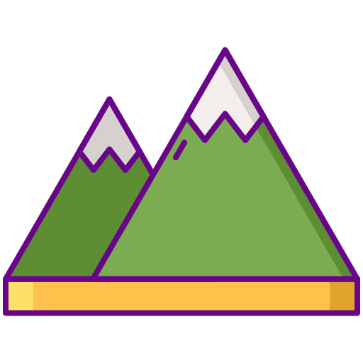

I'm Marija
trying to become a programmer


Moje ime je Marija Bazović. Moje zanimanje je vezano na sistem upravljanja kvalitetom i dugo sam radila u toj oblasti. Živim u Mladenovcu i tu sam radila u nekada velikim firmama, "Petar Drapšin" i "M-Prointex". Ove firme na žalost više ne postoje.
U beznadežnoj potrazi za ozbiljnim poslom, počinjem da pratim aktivnosti NSZ i Vlade Srbije na organizovanju kurseva za prekvalifikaciju nezaposlenih lica u oblasti informacionih tehnologija. Čim je otvoren drugi krug obuke, jer sam prvi nekeko previdela, prijavljujem se. Tako evo stigoh do završnog ispita na smeru za Front-End Web programiranje. Znam da ovo nije kraj, već tek početak napornog učenja, ali upornosti mi ne manjka, mada se poprilično osećam kao lik na ovoj sličici. Nadam se da će ovaj napor biti uskoro nagrađen uspešnim pronalaženjem posla.
Moje slobodno vreme je vreme kada se ne bavim obavezama u kući i baštovanstvom, koje mi je donekle i bilo inspiracija za završni rad. Slobodno vreme provodim sa porodicom na okolnim planinama u dugim šetnjama i planinarenju. Ove aktivnosti zahtevaju dozu upornosti i nikako odustajanja, pa eto odakle mi to. Svima preporučujem boravak u prirodi, kao vid opuštanja od stresova kojima smo manje više neprestano izloženi.
Na ideju da se baš ovako predstavim, došla sam pre par dana. Trebalo je da za ovaj ispit pripremimo neku prezentaciju, pa se setih da je ja u stvati već imam. Ovo je vežbica koju sam uradila pre par meseci (javaScript tada još nismo radili) jer nisam želela da se oslanjam samo na ova kurs, već da pokušam nešto i sama kroz razne online kurseve. Eto ispade baš zgodno.
CONTACT ME© 2018 Marija Bazovic.